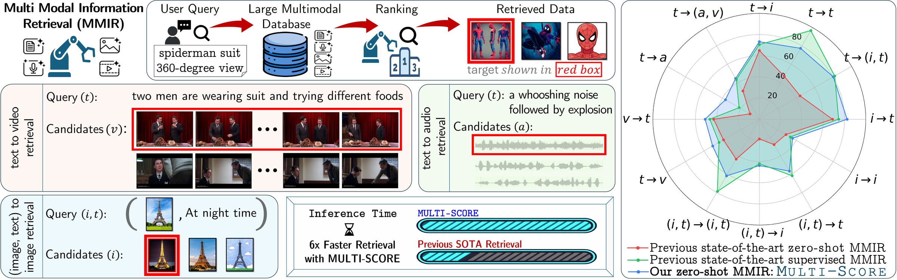
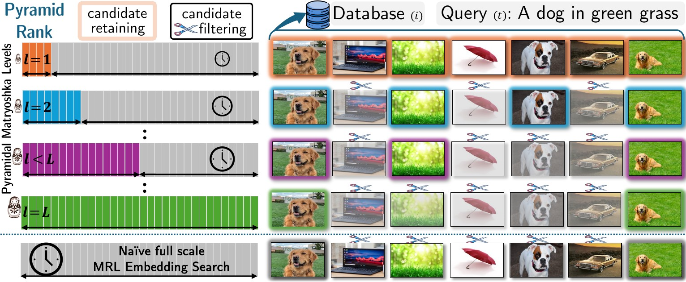
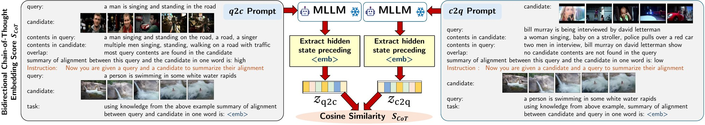
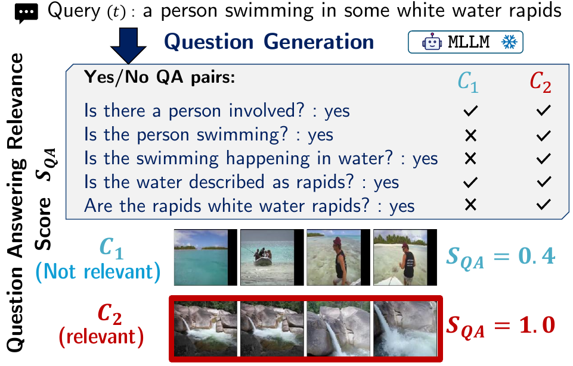
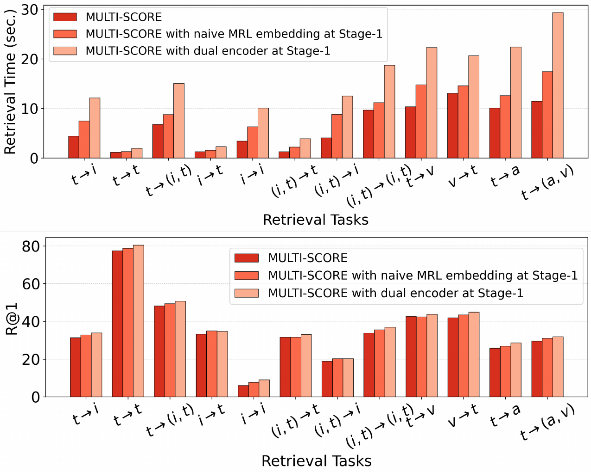
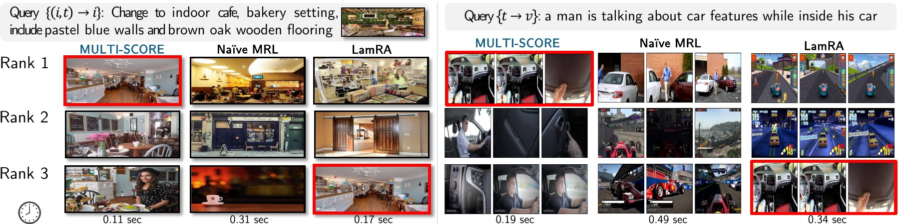

University of Maryland, Baltimore County · {ssaha2, gokhale}@umbc.edu
ACL 2026, Main Conference (Oral)
In multimodal information retrieval (MMIR), candidates relevant to an input query need to be retrieved from a database, where the query and database items span different modalities. As real-world databases evolve, repeatedly annotating and indexing data and re-optimizing domain-specific models across modalities is impractical.
We present MULTI-SCORE, a fine-tuning-free, two-stage MMIR approach that couples efficient candidate filtering with fine-grained multimodal re-ranking. Stage-1 adopts Matryoshka representations to efficiently filter out low-relevance candidates without expensive similarity computations on full-scale representations for the entire database. Stage-2 re-ranks the filtered candidates by computing their fine-grained multimodal contextual representations with two scoring functions for semantic alignment using chain-of-thought prompting and question-answering.
Experiments demonstrate state-of-the-art zero-shot retrieval on 12 MMIR tasks across 32 datasets while outperforming supervised methods on 23 datasets.

Coarse filtering, then fine-grained alignment
Matryoshka embeddings are nested: the first 32 numbers of a 1024-dimensional vector are themselves a usable 32-dimensional embedding. Pyramid Rank exploits that. It starts at the smallest scale, computes a cheap upper bound on what the full-scale similarity could be, and discards every candidate whose ceiling already falls below the threshold.
Both terms on the right are known at level ℓ, so the bound costs nothing beyond the small-vector dot product. Survivors move up one scale, the threshold tightens by bisection, and the loop repeats until only top-K remain.

Stage-1 works on text, which loses detail. Stage-2 brings the raw modalities back. For each surviving candidate, a frozen MLLM is prompted twice with chain-of-thought examples: once to summarise how much of the query is found in the candidate, and once the other way around.
An <emb> token is appended to each prompt. The hidden state just before it has already absorbed the whole prompt, so it serves as the embedding. The cosine similarity between the two directions is the score.

The same MLLM converts a query into M discriminative yes/no questions with known answers. Every surviving candidate is then handed to the model as context, and its relevance score is simply how many of those questions it answers correctly.
The by-product is explanation. The QA log for a candidate says exactly which parts of the query it satisfied and which it failed, so a ranking decision can be read rather than guessed at.

The two Stage-2 scores are complementary: the CoT embedding captures overall semantic overlap, the QA score captures whether specific facts hold. They are mixed with a single coefficient and used to re-order the top-K shortlist.
A single α is tuned per modality group (0.3 and 0.6 in the paper), and nothing else is fit to the data. Both scores run in parallel on frozen models, so Stage-2 adds re-ranking quality without adding a training pipeline.

Zero-shot throughout, compared against supervised systems
Scroll the table sideways to see all 16 M-BEIR columns.

Use the arrows, or the left and right keys
ACL Anthology 2026.acl-long.930, pages 20304 to 20324
@inproceedings{saha2026zero,
title={Zero-Shot Multimodal Retrieval with Multi-Scale Contextual Representations},
author={Saha, Sourajit and Gokhale, Tejas},
booktitle={Proceedings of the 64th Annual Meeting of the Association for Computational Linguistics (Volume 1: Long Papers)},
pages={20304--20324},
year={2026}
}
This work was funded in part by the Defense Advanced Research Projects Agency's (DARPA) SciFy program under agreement number HR00112520301. The U.S. Government is authorized to reproduce and distribute reprints for Governmental purposes notwithstanding any copyright notation thereon. The views, opinions, and conclusions contained herein are those of the authors and should not be interpreted as necessarily representing the official policies or endorsements, either express or implied, of employers, funding agencies, or governments. We acknowledge high performance computing support from UMBC HPCF and a Lambda Inc. award to SS. We thank Reno Kriz for initial discussions on training-free retrieval and Frank Ferraro for feedback on the manuscript.